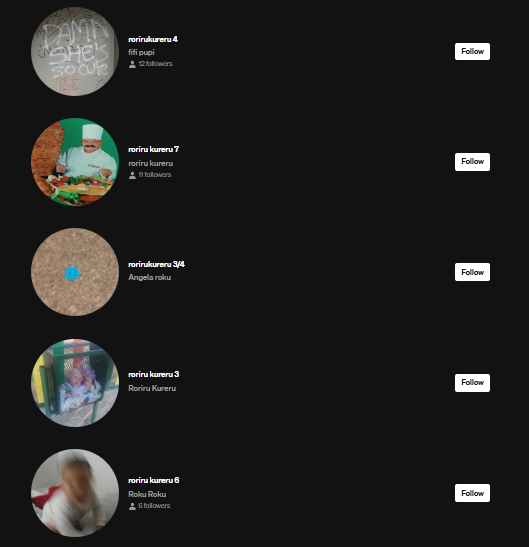

roriru kureru
ROKU - ROKU - ROKU
roku - ES
"RORIRU KURERU" - ¿Qué es?
El nombre de "roriru kureru", nace de una degradación de palabras y sonidos sin sentido,
los cuáles con el tiempo fueron tomando forma y se convirtieron en el nombre de un proyecto sonoro.
Hablando con sinceridad, "roriru kureru", no es un nombre intuitivo, ni simple de recordad
por eso para simplificarlo, se acorta de esta manera: "RO" + "KU" = roku
La base de este proyecto sonoro, es la precariedad de recursos, de esta manera, con poco y
sin mucho sentido, de forma orgánica se fué generando una esencia particular
y la propia vibra del proyecto cobró vida por inercia. La plataforma inicial
para compartir siempre fue SoundCloud, pero poco a poco se amplió a otras plataforma
como Instagram o Youtube.
Al principio solo compartía en SoundCloud, pequeñas pildoras a modo "notas de audio" grabadas
con el móvil. Solos de guitarra y voz, los cuales posteriormente seían superadas en número, por
mezclas de temas hechas con un programa DJ de móvil (DiscDj).
El problema de compartir pistas de audio en SoundCloud, es que de manera gratuita solo puedes comartir
un volúmen concreto. Al superar ese volúmen, o borras pistas y resubes nuevas, o comienzas
el pago de una cuenta Premium. Como conté al principio por precaridad inicial, la solución fue clara... hacer otra cuenta nueva.
Así nacía un movimiento volátil, en el qué nacía un espacio/comunidad entorno a una cuenta, la cual desaparecía y volvía a aparecer
con otro número al lado... "rorirukureru", "rorirukureru2","rorirukureru3".. "rorirukureru6"..."rorirukureru8"...
Fueron muchas las cuentas, y no tuvieron un orden lógico al principio, por pérdida de contraseñas y errores puramente humanos.

roku - EN